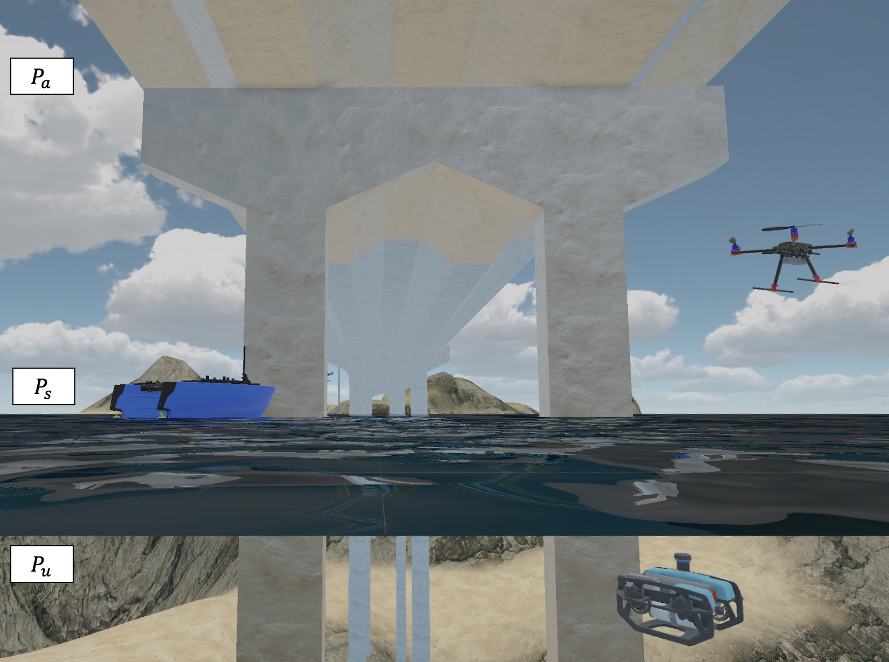
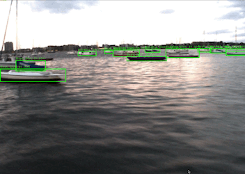
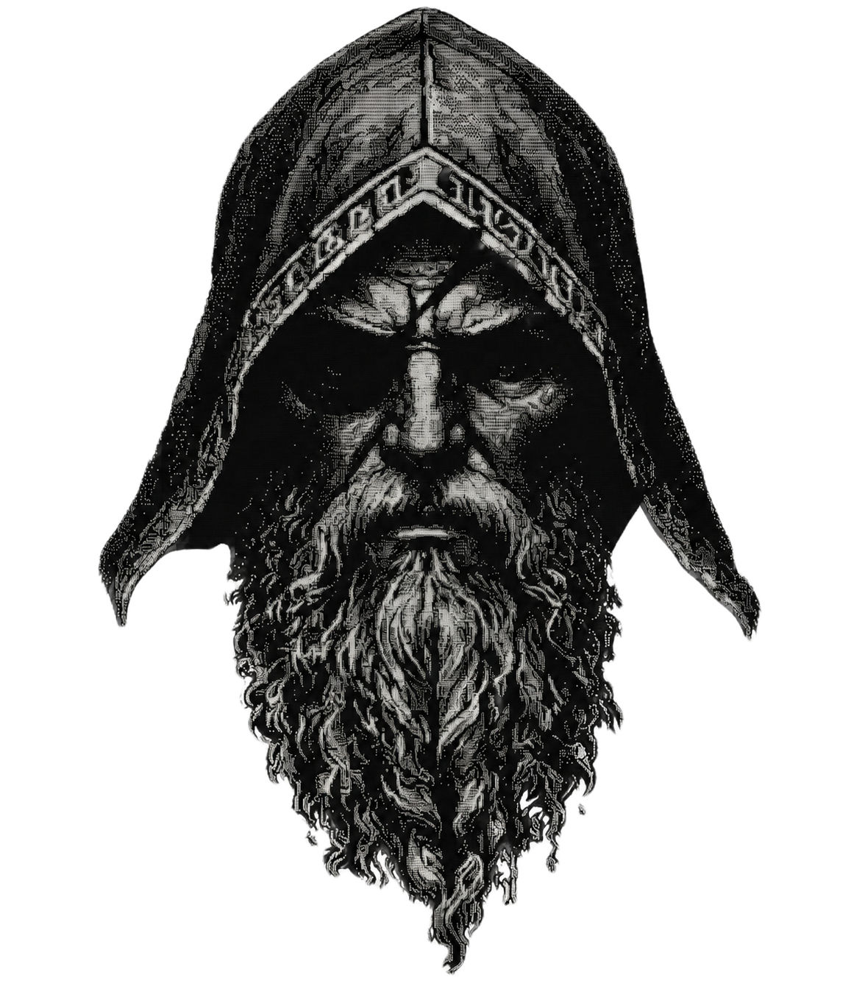
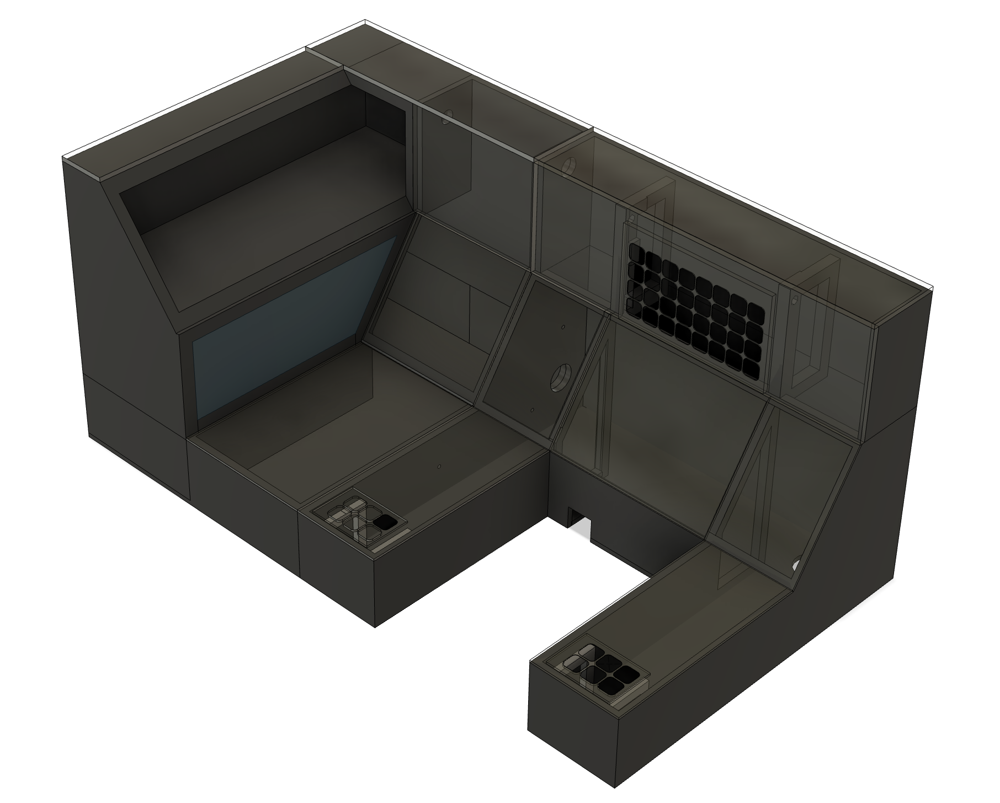

Featured Work

Event-Triggered Coverage Planning
PhD ResearchAdaptive coverage algorithms for autonomous marine sensing across drones, AUVs, and surface vehicles. Validated through CFD analysis and real-world ASV/ROV field deployments.

AI-Driven Heterogeneous Robot Teams
PublishedMulti-agent systems for autonomous monitoring and critical infrastructure resilience. Privacy-preserving data collection using differential privacy for heterogeneous marine robot teams.

SEAQUEST
MS CapstoneCNN-based vessel detection from electro-optical and synthetic aperture radar imagery with decision-tree collision avoidance for autonomous navigation.

Odin AI
Personal ProjectLocal-first, multi-agent AI assistant with 13 specialized agents, local LLM orchestration, web dashboard, voice interface, and 800+ test suite. Containerized with Docker.
BlueROV Platform
OngoingAutonomous Underwater Vehicle platform with ROS integration, autonomous navigation, reinforcement learning pipelines, and real-world field deployment support.

CAD & Additive Manufacturing
DesignFlight simulator console, CNC machine cabinet, 3D printer integration, and custom robotics parts fabricated using modern CAD and additive manufacturing tools.